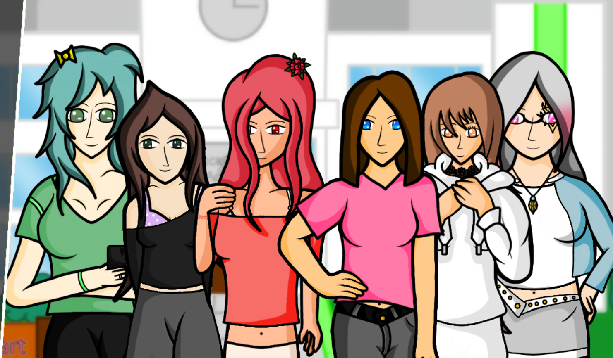
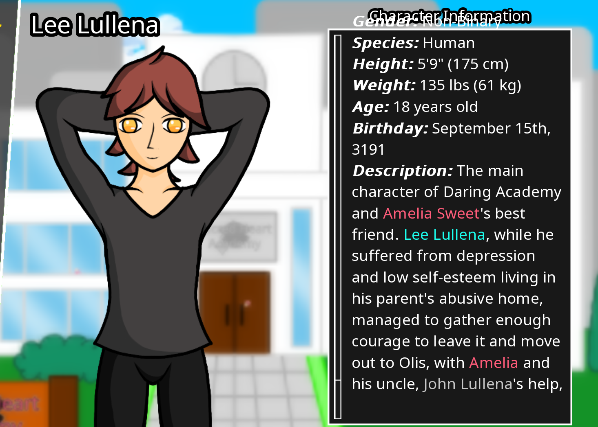
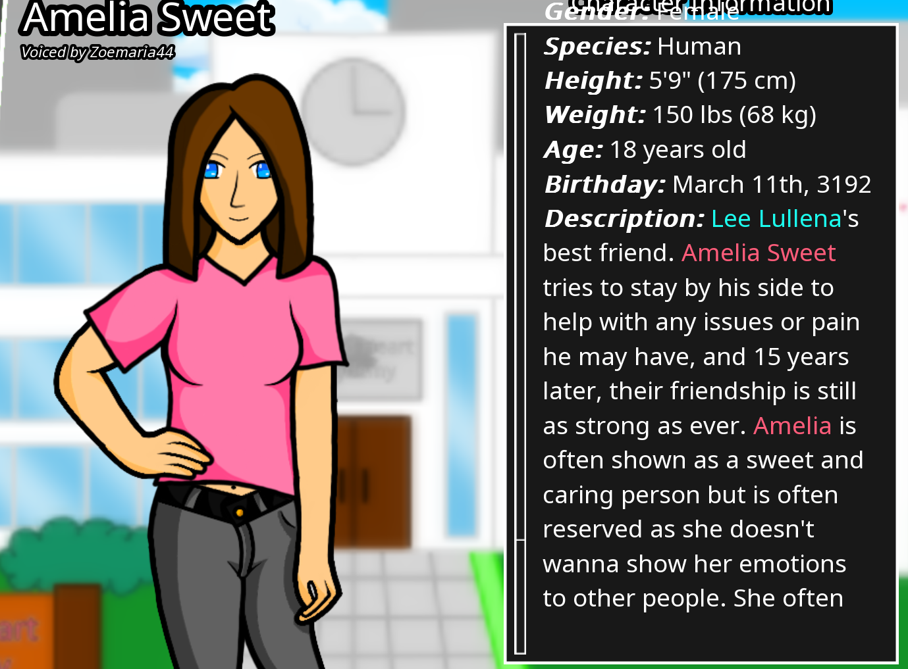
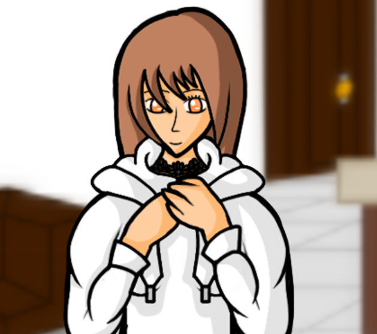
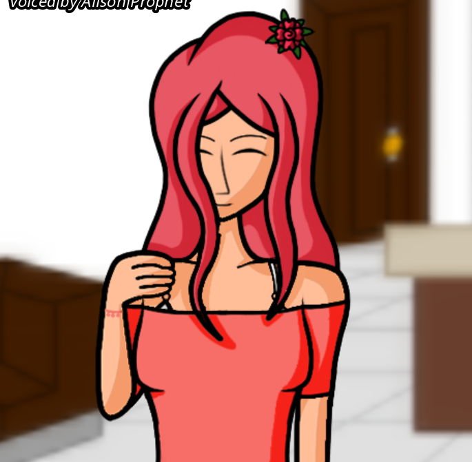
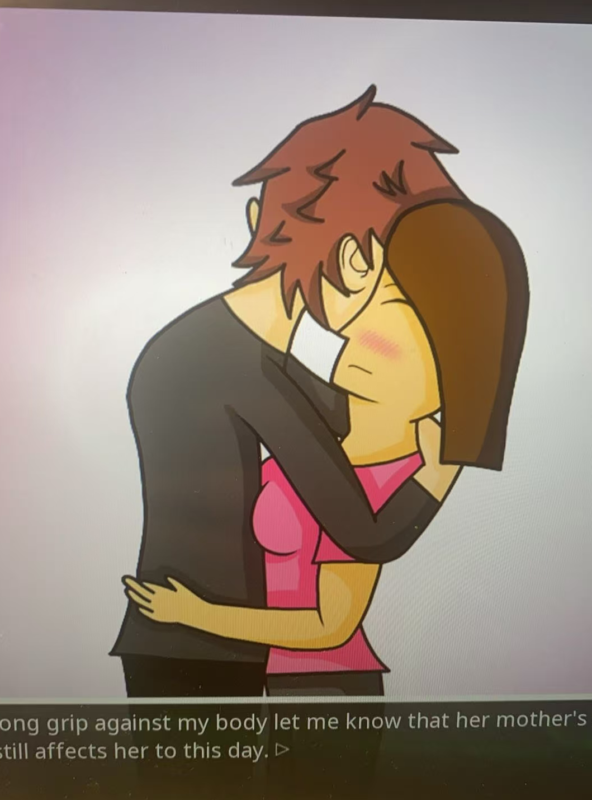

The graphics, media elements, and settings are all quite simple—the graphics, in fact, border on the abstract, failing completely to create any illusion of exploring a tangible world. The scope of your exploration never extends beyond what is visible within a single static image; the peculiar nature of these visual settings is that they easily break your immersion, offering absolutely no intricate details. However, since this game is primarily a visual novel, these elements are not of critical importance.
for more detail of the map, you can visit it here
I can only control a single character—one whose name can be customized, though their default name is Lee. Throughout the game, our understanding of Lee is derived solely through the perspectives of other characters or via a series of peculiar dreams. As of now, the game offers few concrete details; the only things immediately apparent are that Lee is a kind-hearted individual who excels at comforting others.
A young 18-year-old girl and the main character's best friend. Amelia Sweet tries to stay by their side to help with any issues or pain they may have, and 10 years later, their friendship is still as strong as ever. Amelia is often shown as a sweet and caring person but is often reserved as she doesn't wanna show her emotions to other people. She often spends her time alone, and talks to other people other than just her best friend.
When at home, Rose Wheatley, a 19-year-old girl, always thinks of having a nice and safe environment with Iris Wheatley, her younger sister, and her parents. A Portal 2 lover to the core. While Rose is generally an outgoing and active person, she usually spends most of her time with her best friend, Lily Cortez, to overcome Lily's depression due to her mother's death.
While she is a fan of Porter Robinson, Elizabeth Robinson, an 18-year-old girl, is often told she is an angel, she's usually sweet, caring, and passionate about others but if she's in a debate, she will push it beyond her limits, trying every inch to win it.




I didn't encounter any significant challenges while playing this game; the only real struggle was remembering to save my progress regularly. The game crashed on me several times, forcing me to replay sections of the story. As a character, your primary task involves investigating the relationships between the various figures and uncovering their shared history. Progress in the game is driven by building affinity with the other characters.
Unfortunately, we cannot interact with objects—let alone items like food. Consequently, our interaction is limited to collecting textual information. There are, however, a few symbolic objects; for instance, seeing Amelia's guitar prompts Lee to reminisce about happier times in the past.
The game's music is relatively lighthearted and pleasant—neither particularly outstanding nor notably flawed. The sound effects, however, present a minor issue: even with my computer's volume set quite low, sudden, loud vocalizations—such as "Emm," "Oh," or "Yes"—would occasionally burst out, giving me quite a start.
Through its text-based narrative, this game offers a reflection on our own reality. Almost everyone carries painful memories from some point in their past; yet, as long as one lives a happy and carefree life in the present, those painful memories become nothing more than a brief, passing episode in the journey of one's growth.
I believe this game still holds significant potential for further development. First and foremost, the game's abstract art style should be revamped. As for the narrative, it hasn't really unfolded much yet—at most, we've only gained some insight into the past of Amelia, our childhood friend, and had a few interactions with her. However, the storyline still possesses immense potential—for instance, the school life aspect, which hasn't even begun yet.
